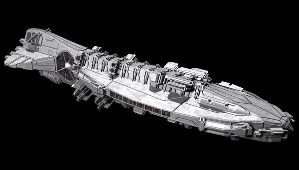
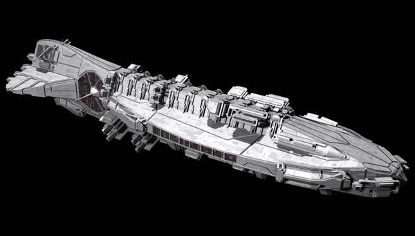

In the boundless expanse of the cosmos, where stars twinkle like distant beacons in the night, rockets stand as the guardians of human ambition, their fiery engines igniting the imagination and propelling us toward the unknown.
With a thunderous roar that reverberates across the launch pad and echoes through the annals of history, rockets break the shackles of gravity, lifting payloads of scientific instruments, communication satellites, and even intrepid explorers into the heavens above.
Each launch is a ballet of precision and power, orchestrated by teams of dedicated professionals who work tirelessly to ensure every mission's success.
But rockets are more than just instruments of propulsion; they are the vessels of our collective curiosity, carrying humanity's hopes and aspirations to the farthest reaches of the universe.
They enable us to gaze upon distant planets, moons, and stars, unraveling the mysteries of cosmic evolution and uncovering the secrets of our celestial neighbors.
In the end, rockets are not merely machines of metal and fuel; they are the embodiment of human ingenuity, ambition, and spirit. They are the vessels through which we reach for the stars, daring to dream of worlds beyond our own and daring to believe that anything is possible if we have the courage to reach for it.
 
